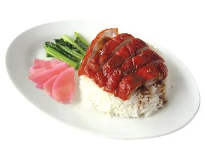

ข้าวหน้าเป็ด

Ingredients (วัตถุดิบ)
- เนื้อเป็ดย่าง 300 กรัม
- ข้าวสวย 1 จาน
- น้ำราดเป็ดย่าง 3 ช้อนโต๊ะ
- ซีอิ๊วดำหวาน 1 ช้อนชา
- แตงกวาหั่น
- ผักกาดหอม (ตามชอบ)
Steps (วิธีทำ)
- หั่นเนื้อเป็ดย่างเป็นชิ้นพอดีคำ
- ตักข้าวสวยใส่จาน
- วางเนื้อเป็ดลงบนข้าว
- ราดด้วยน้ำราดเป็ดย่างและซีอิ๊วดำหวาน
- จัดแต่งด้วยแตงกวาและผักกาดหอม
- พร้อมเสิร์ฟ
Nutrition Facts (โภชนาการ)
- Calories: 520 kcal
- Protein: 28 g
- Carbohydrates: 55 g
- Fat: 22 g
← Back to home